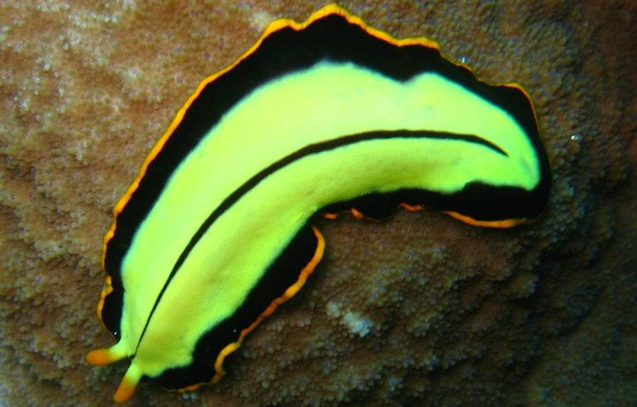
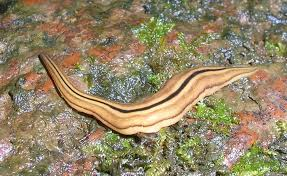
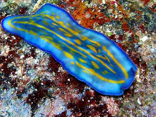

Platelmintos
Los platelmintos, Platyhelminthes, conocidos también como gusanos planos, son un grupo de animales invertebrados que incluye aproximadamente unas 20000 especies. Dentro de las características utilizadas para clasificar a estos animales destacan el ser acelomados, protóstomos y tribásticos. Acelomados puesto que no tienen un celoma o cavidad corporal general y su cuerpo es macizo, protóstomos ya que la boca del animal deriva del blastoporo embrionario y tribásticos puesto que presentan tres hojas embrionarias durante su desarrollo: el endodermo, el mesodermo y el ectodermo.

Los platelmintos se pueden reproducir tanto de manera sexual como asexual. A diferencia de los demás sistemas, el aparato reproductor sexual de estos animales es relativamente complejo. La mayoría de especies son hermafroditas por lo que disponen tanto de órganos sexuales masculinos y femeninos. Su fecundación es interna y el proceso que siguen es el siguiente: los que actúan como hembras, los óvulos que maduran van a parar a una cavidad conocida como ootipo. Del ootipo llegan hasta el útero, donde el platelminto masculino habrá introducido previamente sus espermatozoides.
Nota aclaratoria: Un organismo hermafrodita, puede producir gametos masculinos y femeninos, pero eso no quiere decir que siempre se puedan reproducir o fecundar de manera individual (autofecundación), en la mayoría de ocasiones, precisan de dos individuos, uno actuaría como hembra y el otro como macho (hermafroditismo simultáneo).
Su reproducción asexual tiene lugar mediante fragmentación, es decir, si un individuo se divide en varios fragmentos en unas condiciones favorables es capaz de generar un nuevo individuo a partir de cada uno de esos fragmentos.

El filo de los platelmintos tradicionalmente se han divido en cuatro clases diferentes: los Turbelarios, los Monogéneos, los Tremátodos y los Cestodos. Veamos las características de cada grupo, aunque muchos grupos han sufrido cambios dado la polémica que en muchas ocasiones acarrea la clasificación de animales, sobre todo cuando se trate de especies un tanto controvertidas. Incluso especies integradas en este filo no disponen de una clase asignada como es el caso del orden Nippotaeniidae.
Los turbelarios se conocen popularmente como planarias, sin embargo estas suponen sólo un grupo dentro de esta clase. En los turbelarios se incluyen aproximadamente 4500 especies de platelmintos, la mayoría de ellos de vida libre y con tamaños que van desde 1 mm hasta los 6 cm aproximadamente. La mayoría vive en ambientes acuáticos, pero también los hay terrestres que suelen tener vida nocturna y vivir en zonas húmedas. No disponen de cutícula y su piel está formada generalmente por una sola capa de células que contienen múltiples cilios. Estos cilios son útiles para la locomoción en las especies acuáticas, mientras que otras necesitan movimientos musculares o la secreción de substancias mucosas para moverse.
La cefalización de esta clase de platelmintos es la más destacada y concentran un gran número de ganglios cerebrales en la parte anterior del cuerpo. Además, poseen ocelos, unos ojos primitivos que les permiten distinguir por dónde les llega la luz.
El grupo Tremátodos se conoce habitualmente como duelas y destacan por ser parásitos de varios animales vertebrados, incluyendo al ser humano entre ellos. Su tamaño va desde uno a varios centímetros y poseen estructuras para fijarse en sus hospedadores. Algunas especies son anaerobias ya que no les llega el oxígeno al lugar que habitan.
El ciclo vital de los tremátodos es bastante complejo, normalmente parasitan diversos organismos a lo largo de su vida, alternando animales vertebrados e invertebrados.
En este grupo se incluyen unas 4000 especies de animales, siendo todas ellas parásitas del aparato digestivo de vertebrados y caracterizadas por una gran adaptación a este modo de vida. Uno de los ejemplos más conocidos de cestodo es la tenia o solitaria, que parasita el tubo digestivo de los humanos. La parte más característica de estos platelmintos es el escólex, que es una extremedidad cefálica que presenta ganchos o ventosas para fijarse en el tubo digestivo.
El cuerpo de los cestodos, conocido como estróbilo, está segmentado, aunque de una manera diferente a como ocurre en los anélidos y está unido al escólex por el cuello, que es la zona germinal del animal. Los fragmentos del cuerpo se llaman proglotis y se van acumulando desde el cuello generando organismos que pueden medir varios metros. Normalmente también tienen dos hospedadores que acostumbran a ser de especies diferentes.
Este tipo de platelmintos también son parásitos, aunque normalmente externos y de especies de peces y anfibios. La mayoría son bastante pequeños, desde algunas micras hasta un par de centímetros. El órgano de fijación de los monogéneos se conoce como opisthaptor. El cuerpo suele ser plano y en algunas especies la faringe es capaz de secretar enzimas que digieren la piel del hospedador.